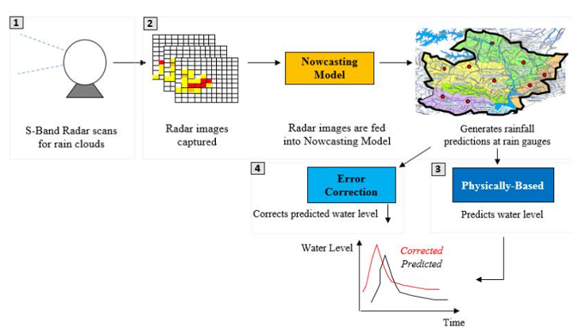

洪災
Table of Contents
1 緒論
2021年7月中旬，西歐遭遇有史以來最嚴重的洪災，造成至少170人喪生、數十人失蹤，其中以德國為受災最嚴重區域。這場災難性洪水重創德國西部，但也影響了比利時、盧森堡、荷蘭，街道和房屋被泥濘的污水淹沒(圖1)，整個社區與外界隔絕。北萊因－西發利亞邦的斯坦巴赫大壩（Steinbachtalsperre）有潰堤風險，此次洪災也影響到荷蘭南部的林堡省（Limburg），當地數以萬計的居民被疏散，當地緊急部門也保持高度戒備。盧森堡同樣受到暴雨襲擊，許多地區因此淹沒1。
此次西歐洪災難的發生，聯合國氣候變遷小組（IPCC）前副主席、氣候學家朱澤爾認為是因為：「飽含水分的空氣團被高空低溫擋住，以致在災區上空停留四天。」根據德國氣象單位資料，14到15日，德國災區降下100到150毫米雨量，相當於兩個多月雨量2。德國總統史坦麥爾形容，這場洪災是巨大悲劇，可能需要幾個星期才能全面評估損失，恐怕將耗費數十億歐元資金重建家園1。
Figure 1: 豪雨過後，7月16日，臨近馬士河的荷蘭林堡省Roermond
然而，正當人們尚未自歐洲此次洪災帶來的震撼中回過神來，幾天後，7月20日傍晚，中國鄭州發生了更為嚴重的洪災，三天內的降雨量相當於鄭州一年的平均雨量，達617.1公釐，時雨量更高達201.9公釐。暴雨造成一列行進中的地鐵列車進水、 長達4.5公里的京廣隧道全面淹水，數百輛車輛困在其中(圖2)，其他被大水淹没的房屋農田更是難以估計，中共官方稱聲此次水災造成33死亡(至7月23日止)，超過300萬人受災3。引發外界質疑的除了此次天災中有多少人禍成份（如未即時停駛地鐵、水庫無預警洩洪），然而更多的檢討卻指向鄭州這座投入了五百多億人民幣所興建的海綿城市仍然阻檔不了洪災，媒體也紛紛以「海綿城市失守」 、「海綿城市設計崩潰」 、「海綿城市失效」做為新聞標題3。
Figure 2: 鄭州京廣隧道 逾百車浸沒水中
根據統計，光是2021年六、七兩個月，歐洲、北美、亞洲、大洋洲和非洲至少有40個國家，遭受洪水、熱帶性低氣壓、熱浪、野火和乾旱等毀滅性極端自然災害的襲擊。世界氣象組織（WMO）也正式提出警告，此類極端天氣事件可能會更加頻繁和嚴重；加州大學（University of California）更發表研究指出，人類加劇氣候變遷的後果將是全球極端降水量持續增加4。
臺灣地理位置位在季風氣候區與西北太平洋地區颱風時常行徑路線範圍內，颱風行經臺灣時本就經常帶來驚人風速及雨量，導致嚴重人員傷亡及經濟損失。根據聯合國世界銀行 2005 年「災害高風險 區評估報告」 (Natural Disaster Hotspots – A Global Risk Analysis)，臺灣為全球易受災害風險地區。而根據臺灣氣候變遷科學報告(2011)5:臺灣主要受到的災害為水文災害為主，因受到極端降雨強度與發生機率增加，原本脆弱的地質條件更受到嚴重衝擊，不僅我們的生活、產業及生態，亦可能造成社會經濟相關問題6。身處一個極端氣候即將成為日常現象的時代，城市的規劃角度與防災策略勢必要做一番全新的調整，以因應即將來臨的下一次天災。
2 台灣的洪災成因
台灣是一個四面環海的海島型國家，受梅雨及颱風季節極大影響，而在汛期期間，也就是每年五月初至十一月底，是台灣地區雨量最豐沛的時候，常會帶來連續性的豪雨，此時也是最易發生水患的時刻。幾乎每年都會有重大的水災災情發生，且其所帶來的損失卻都是相當慘重不容忽視的7。
洪水發生的主要原因為暴雨，以及其他如泥砂量大、河道短促等不利的自然條件，再如上許多人為因素的影響，往往使得災害程度加重。彙整臺灣颱洪災害的成因，概略可歸納為自然因素、人為因素以及洪災管理三個面向來探討。
2.1 自然環境因素
臺灣位處雨量甚為豐沛的亞熱帶地區，因此氣候變遷影響，未來極端降雨強度增加，並直接衝擊我們現有因應能力。在自然因素方面，可分為下列因素6:
- 氣候及雨量
臺灣經常受到颱風或暴雨衝擊。其中全年平均雨量是世界平均值的 2.6 倍，平均降雨量達 2510 公釐，為世界平均降雨量為 730 公釐的 3.5 倍8，故每逢颱風季節，挾帶豪雨，表土易受沖蝕，若遇豪雨即隨河水急瀉而下，形成土石流而釀成災情9。馮正民、詹士樑等人10的研究指出，臺灣氣候變遷將造成其氣溫上升、降雨改變以及海平面上升，隨之而來的是颱洪災害、坡地災害及地層下陷、海水倒灌亦日益嚴重。
颱風強度增強將增加暴潮發生的機率11，加諸漲潮時海水抬升，從河口向上游湧入，造成原本就高漲的河水更難以宣洩，便往河床兩旁溢出。因此，產生降雨量過大且超過防洪設施標準，造成河道水位高漲，內水無法排除，甚至河水溢淹12。
- 水文與地形
台灣南北縱長 384 公里，東西最大寬度僅 144 公里，中央山脈由北向南連綿不斷、高峰聳矗，地表坡度超過 20%者佔全台灣總面積 53%。此種天然地形，導致年平均逕流高達 75%;雨水接觸地面後，直接經由河川流向大海。其中河川大多自然形成東西向，自中央山脈急速流向東西方向海洋，坡陡流急的狀況下，洪水災害因此發生13。
此外，臺灣本身河川坡度大、長度短，河川進入平原時，由於坡度減小致流速減緩，形成類似塞車的效果，阻擋了上游較快速水流的行進空間，便在阻塞處往兩側溢流而出形成水患。
另一方面，台灣的集水區及河道坡度大，河道無法大量積蓄水量，上游的溪流在短時間內便會流至下游。此外，集水區土壤脆弱，平均每年土壤沖蝕率為 2 至 20 公厘，是中國黃河流域之 5 至 70 倍、美國密西西比河流域之 30 至 300 倍。導致大量的泥砂隨著洪流而下，沈積在河道內，自然會影響河道排洪能力，河道無法大量積蓄水量，上游的溪流在短時間內便會流至下游，造成洪水6, 7。
2.2 人為因素
由於經濟發展的需求，城市的水泥建築快速的取代自然環境，隨著時間的變化，經濟水準的提昇與人口的發展使都市範圍持續向外的擴大, 以人工的方式改變原有的地形以增加都市的土地，相對的也改變了原有地形的功用。諸如此類的人為開發經常是造成地區發生淹水的潛在因素，大致可分為以下幾類14：
都市開發效應
土地開發快速與建物過多最直接的影響為導致不透水面積增加，造成地表逕流增加，使得在暴雨發生時，雨水無法入滲直接快速流入排水設施，透過排水設施將洪水導入河川，造成河川流量增加，產生洪峰量提高與洪鋒時間提前的情形，都市下游地區易產生積水的情形14。都市發展造成洪水災害的因素可再分為以下兩類:
地層下陷
產業發展過程中，需大量的人力、能源與水資源，其中有關水之需求量的增加，將導致用水調度愈趨緊張，不斷的超抽地下水導致地層下陷。因超抽地下水，產生地層下陷區域，產生地下水輸入量與輸出量不對稱與損害原有排水管線，而造成阻礙水流排放、地盤下陷等情形，影響地層下陷區域之淹水14。例如:莫拉克颱風造成嘉義縣東石鄉、布袋鄉、彰化縣大城鄉及雲林縣湖口鄉、四湖鄉等地區淹水災情15, 6。
排水系統維護不良
因都市擴張時，無法即時配合相關排水建設，造成既有的排水管道，已無能力負擔新市區排水功能，而造成淹水。都市長時間發展後，排水管線逐漸老舊，加上排水管線的維護不良，排水功能降低，無法有效宣洩暴雨產生的逕流16。此外，不透水舖面替代原先地表舖面，降低雨水入滲量，相對地增加了地表逕流量，只要降雨的情形發生，都市下游地區易產生積水的情形。當都市發展時間達到一定時間後，既有之排水管線因老舊，加以維護管理不良，也會造成水流能力降低。
土地的不當利用與變遷
台灣地區近二十年以來，都會地區附近，原本不適宜使用之高度敏感性土地，在人為的開發行為下，大量改變其應有之土地利用型態，地理與水文環境產生劇烈的改變。原有的天然排水路 遭到破壞或不當使用，助長了淹水的嚴重性17。 河谷地的主要功能原為滯洪區或洪泛區，並不適高密度人口住居，更不適用都市計畫興建18。縱使如此，與水爭地現象卻有日益增加的趨勢。河道縮窄排洪不易，沿河岸低窪地區，每逢豪雨常受淹水之苦。
- 山坡地開發過量
山坡地原生植被具有吸附雨水的功能，因人類為利益開發而擾動植被與表土，造成山坡地的土層缺少植物的保護。雨季來臨時，開發過的坡地不僅無法儲存雨水，還會因為降雨而造成嚴重的土石沖蝕與坍塌等後果。在土地開發壓力逐漸提升之下，山坡地開發缺乏合理的土地適宜性規劃，不僅森林涵養水源的功能 嚴重破壞，亦造成了土壤嚴重流失;引起地表逕流增大，山洪傾 洩而下，亦使得河道洪峰流量遽增19。
2.3 洪災管理層面
洪災雖主要原因來自環境天候、地質因素以及人類的不當使用，然而處理洪災問題的政策本身也常是導致洪災嚴重的因素之一。在洪水管理上所造成的問題，大致可分為下列因素20:
河川行水斷面減少
台灣先天上地形便是山坡陡峻、河川坡度大，加上河川上游的集水區地質脆弱，表土沖蝕量顯著，造成河川之泥砂運移量十 分可觀;此種地形容易產生河道及水庫淤積，河川集水區上游經年累月的不當墾伐及超限利用下，造成水土嚴重流失，其中所挾帶的泥沙使得下游河道淤積更趨惡化，使得行水斷面減少。加上垃圾、建築廢土在河川行水道上隨意傾倒的情形，更降低了河道調洪、分洪及防洪的能力，使得洪災潛能與日俱增21。
計畫洪水量未適時檢討
長期以來，台灣地區的水文資料與原來防洪設計的工程參考資料，十分有限，以台北地區為例，防洪計畫係以 1973 年以前 的水文資料，計算出洪水重現期為 200 年保護標準。根據台北氣象站 1898 至 2000 年之降雨資料統計分析，年總降雨量變化趨勢百年來增加 268 公釐，因此大台北地區 200 年洪水量保護標準之設計是否足夠，易受到質疑的21。2003年基隆河因洪水所造成的嚴重災情，檢討發現在「基隆河治理工程初期實施計畫」中，係依據 10 年重現期之保護標準及區域排水設計之規定標準，但是在納莉及象神颱風的降雨量皆超過基隆河所能負荷的範圍，因而造成重大災情。
- 防洪與都市排水設施未能有效整合
都市雨水下水道系統與河川未能有效銜接或出現河道排洪瓶頸段(如基隆河圓山附近河段)，導致都市排水功能不佳，河川水位壅塞後迴水上溯等情況，進而氾濫成災22。 管理維護問題
在災害防救法實施前，各級災害管理單位權責不明23，而水資源之利用與管理效率不明確，政府往往無法有效管理集水區如土地超限利用、侵占河道等違法行為。基層單位防災救災之應變能力不足，對於防洪設施設備之維護也未盡完善，降低了調洪及防洪的能力。以民國 85 年賀伯颱風為例，土城、板橋地區即因河川下游洪泛區之防洪閘門及抽水機具未能即時妥善運作，導致堤岸內進水，造成洪災。
3 近年各國水患分析
2008年以來，臺灣及世界許多地區因豪雨發生嚴重的洪水及土砂災害，規模及影響的範圍都超過以往的紀錄，造成嚴重的損失。面對氣候劇烈化以及極端化可能帶來的災害，除了蒐集資料，進行調查研究之外，學習國際經驗技術交流也是重要的一環。以下為行政院針研考會對近年各國重大水患進行的分析與反思24。
3.1 2011年澳洲水患事件
- 水災事件影響
2010 以及 2011 年，澳洲傳出持續不斷的洪水災害，其中尤以澳洲昆士蘭州最為嚴重，包括首府布里斯本在內(圖3)，昆士蘭州大約有一半以上的區域被宣布為災區，詳細災民 人數甚至高達 20 萬以上，且造成 35 人死亡 9 人失蹤的悲劇。
Figure 3: 澳洲昆士蘭州首府布里斯本淹水圖(資料來源: Brisbane Flood COP)
- 水患降雨分析
根據 2011 年四月第 69 期的國家災害防科技防救中心的災害防救電子報，以下三大成因是造成這次災害的主要因素:
澳洲全國平均降雨異常
依據澳洲 2010 年 10 月～12 月之降雨資料顯示，澳洲全國有二分之 一之地區降雨已超過平均氣候值的兩倍以上，其中又以昆士蘭最為明 顯。且該年為歷來最強之反聖嬰年，使得附近地區海溫偏高，引發旺 盛的對流。
塔莎熱帶氣旋之影響
2010 年 12 月 25 塔莎(Tasha)熱帶氣旋登陸，主要降雨集中發生在熱帶氣旋消散後的這段時間，持續性的降雨係受夏季季風與鋒面系統 影響，在昆士蘭州降下破紀錄的大雨，引發嚴重災情。
連續性集中降雨成災
緊接著在 12 月底降雨之後，昆士蘭州於 2011 年 1 月 3～4 日、1 月 6～13 日即維多利亞州於 1 月 10～15 日等三段時間又出現集中型降 雨。這四場集中型降雨事件，以 1 月 10 日在昆士蘭州首府布里斯本地 區的降雨最為嚴重，造成該地區 1974 年以來最嚴重的災情。
- 水患成因
2011 年四月第 69 期的國家災害防科技防救中心的災害防救電子報對於水文與防洪標準等水患因素亦指出:
都會地區沿岸開發形成防災弱點
澳洲幅員廣大，大部份內陸地區地勢低平且降雨稀少，河川大都流路悠長、坡度平緩、流速緩慢。此次發生嚴重水災，主要原因是反 聖嬰異常氣象所導致之短延時強降雨。次要原因則是都會地區發生破 堤，導致昆士蘭州首府布里斯本成水鄉澤國，而都市型洪災直接造成 經濟損失慘重。
現有都市防洪標準不足以應付本次強降雨
布里斯本是澳洲第三大城，人口超過 200 萬，約與台北市相當， 面積則約為台北市的 21 倍。在都市防洪方面，布里斯本市區排水為 2-5 年降雨標準，河川護岸為 25-50 年防洪標準，對照台北市市區排水 為 5 年降雨標準，河川堤防為 200 年防洪標準。歷史上布里斯本曾於 1974 年時曾發生嚴重水災，市區三分之一被淹沒，造成 16 人死亡， 當時的暴雨頻率已達到 60 年一次降雨強度，所以布里斯本在經歷 1974 年洪災後，河濱建物高程均墊高至防洪 100 年再加 50 公分。但此次 2011 年 1 月在布里斯本附近地區的強降雨，仍造成超過防洪標準的洪 水發生肆虐破壞。
各河系洪峰時間同時匯集於布里斯本
布里斯本為一位於河口段之都市，布里斯本河蜿蜒流經市區後出 海，其上游則有拉克亞溪、上布里斯本河等各支流匯集後流向下游。 當上游於強降雨後山洪暴發，各支流的洪水往下游行進，匯流後產生 疊加效應形成洪峰抬昇，持續過高的水位終造成布里斯本市區發生破 堤而洪水肆虐。同時上游的威芬豪水庫(Wivenhoe)，也在豪雨傾注 之時，在考量水庫操作安全下必須持續洩洪至布里斯本河，更加重了 下游布里斯本的淹水災情與經濟損失。台北市的地理環境類似布里斯 本(位於河口段、各支流匯集、上游有水庫，兩者比較如表一及表二 所示)，對於上述水患致災因子應加強注意。而台灣其它重要都會區亦 有面臨相似的威脅，未來應列為地區災害防救計畫之重點改善事項。
- 結論與反省
國家災害防救中心也指出為因應未來複合性災害之衝擊，必須加強高潛勢區的整體防災工作:
- 氣象預報模式改進，可作為民眾與應變人員之依據。
- 預警資訊傳遞，應注重相關資訊的即時性與可操作性。
- 地方政府應落實警戒區劃設與管制作業，考量社區災害特性、人 口結構與社經條件，進行災害風險潛勢圖製作，發展具有符合當 地需求的防救災對策。
- 研擬災害保險制度，兼顧財政籌措與推動民眾減災意願。
- 強化疏散撤離之規劃與收容避難場所之管理，降低民眾生活之不便。
此外國家災害防救中心亦指出，針對因應近年來極端氣候變遷的威脅，必須盡快強化國土之減災規劃:
- 國土利用規劃應考量防減災之需求。
- 都市更新計畫中需要針對都會區滯洪與蓄洪之功能提出規劃。
- 藉由租稅優惠鼓勵各項開發計畫中除環境影響評估外，應納入防 災影響評估。
- 持續透過教育與宣導，強調減低災害風險之生活態度等。
- 氣象預報模式改進，可作為民眾與應變人員之依據。
3.2 2011年泰國水患事件
- 水災事件影響
泰國在 2011 年遭受半世紀來最嚴重的水患，大半國土受災，位於湄南河下游的曼谷面臨洪水進逼(圖4)，有多個工業區都泡在水裡，導致工廠無法運作，勞工頓失依靠。總理盈拉甚至宣布改變圍堵策略，下令打開曼谷北部、東部的水門，讓洪水通過市區部分運河水道通往大海。由於這次受災的泰國、越南與柬埔寨都是世界主要的稻米輸出國家，因而國際也關注稻米價格使否因而上漲。
Figure 4: 泰國水患影響範圍與程度(資料來源:GLOBAL VOICES)
- 水患成因
泰國水患主要為以下災害之成因25:
颱風、氣候變遷與反聖應現象:
此次災害主要的降雨因素則為颱風，今年有多個颱風在西太平洋 形成後，轉入中南半島，這些殘留的雲系也為當地帶來相當的雨量， 九月至十月間甚至一星期便有一個颱風進入中南半島。再加上今年仍 出現反聖嬰現象，通常反聖嬰年的氣象條件下，都會造成泰國淹水。 以上這些因素交替之下，造成今年雨季期間，東南亞眾多國家都遭受 嚴重洪患，除了泰國，柬埔寨、寮國與緬甸也受害深重，菲律賓與越 南亦有災情。
幅員遼闊的流與形成龐大水量往下游匯集
與台灣不同，泰國的河川流域廣闊，上游的降雨往往需要數周才 會抵達下游，匯納的水量也更大，僅能透過湖泊來舒緩，淹水後也無 法快速消退，因此防災體系便顯得格外重要，泰國顯然是出了問題。 針對此次水患，專家們陸續指出人禍因素，包括都市化過於快速，新 興工業區佔用河川溼地，上游仍有伐木，而下游又有地層下陷問題， 這些因素都突顯出水資源管理的體制過時。聯合國的機構國際減災組 織(International Strategy for Disaster Risk Reduction , UNISDR)也建議 泰國，應提出因應災難的通盤架構，特別是針對於水災。
缺乏氣象預警設施與人力
由於東南亞的氣象預警設施與人力相對較為欠缺，必須仰賴國外 提供資料與分析結果。彭博士提及，各國若要減災，仍需要從中央到 地方都能配合，但即便以上條件都達成，若國內仍使用過時的方式預 警或應變，對於防災或減災一樣徒勞無功。
- 結論與反省
泰國經歷 2011 的水患之後，國家災害防救科技中心與 2011 年十一月份第 76 期的災害防救電子報提出下列幾點極具重點性之反省重點:
避免地層下陷，管制抽取地下水:
曼谷位於河口低窪濱海地區，面對快速發展的都市，過度使用地下水，造成地成下陷。大台北地區，早期也有地層下陷問題，後來經地下水使用管制，成效良好，明顯減少地層下陷問題;但是台灣西南沿海地區仍有嚴重地層下陷問題，因應海平面上升對沿海低窪地區的衝擊，確實做好減緩地層下陷，有效管理地下水資源利用。
都市化或高密度使用土地，應加強防洪系統改善與防減災管理:
面臨都市快速發展，在早期規劃的防洪措施，大多已無法滿足未來極端事件的衝擊，即使曼谷地區有完善的防洪系統，仍無法完全抵擋本次洪水侵襲。台灣的大都會地區，也需檢討現有防洪系統的脆弱度，提出改善調適對策，以因應極端氣候事件以常態化，可能遭遇的災害衝擊。
開發區位適宜性評估:
近年來泰國工業區的開發以曼谷北邊地區為主，鄰近曼谷主要原因，包括交通發達、人力資源豐富、進出口方便，但是除便利性外，未來都市發展與區位開發，必須同時評估環境脆弱性，減少災害衝擊。
企業擬訂持續營運計畫:
泰國工業區部分設置於洪水災害風險相對較高的地區，企業必須考量風險，擬定企業持續營運計畫(Business Continuity Planning,BCP)，以加速恢復生產線順利運作，維持正常產能。
水庫操作搭配氣候預測:
台灣水庫兼具供水與調洪功能，為了有效率地進行水庫經營操作，必須與氣象預測充分交流資訊，建立個別化的操作模式。
保障勞工穩定收入
本次泰國洪災，透過社會保障辦事處，將支付 50%的工資，對暫時失業工人進行補償，避免天然災害影響工作權益。台灣是個高災害風險地區，也有可能面對天災造成工廠非自願性停工情況，為保障勞工基本生活，建議考慮勞保給付範圍，擴大天然災害導致工廠必須停工的最低薪資保障，避免勞工生活陷入困境。
暢通災情資訊傳遞管道:
從收集資料中，泰國建立許多資訊系統，收集災情資訊，也提供災害相關資訊。但受災民眾可能面臨斷電、通訊中斷，無法透過網路傳遞訊息獲得資訊，必須規劃其他管道，讓民眾獲知最新的應變救災作業。
3.3 2011年美國水患事件
- 水災事件影響
美國密西西比河水系全長 6270KM 流域面積廣達 2,980,000 平方公里，是美國國內通過運河與五帝湖區連成一巨大的內河航運系統主要河川，其中可通航的航道約有 40 調，水深 2.75 米的航道達一萬多公里，航運價值非常之高。
2011 年 4 月 14～16 日之間，美國發生有史以來最大的風暴，為美國南部、中部帶來驚人的雨勢，同年4 月 25～28 日之間又遭受到風暴襲擊，致使美國中西部發生70幾年來最大水患，排名世界第三大的密西西比河流域水位暴漲6倍，淹沒沿岸數百公里的低窪地區，沿岸八個州約400萬人口受到威脅，影響面積約30萬平方公里，將近9個台灣大，首當其衝的田納西州最大城曼菲斯已經撤離上千戶人家。此次的密西西比水災，使得阿肯色州農民也受水災影響，推遲及放棄稻米播種，當地逾120萬畝稻田佔全美面積的1/10。
- 水患成因
密西西比河融雪:
密西西比河每年皆因春天融雪兒造成水位暴漲，這已是每年皆會發生之水位變化常態，不過此次災害之影響卻因為異常的兩個風暴出現，形成超常規降雨使得本來就已經上升的水位超過堤防的洪峰保護標準，更形成本次在歷史上密西西比河暴漲水位第二高的紀錄。
風暴影響:
2011年4月14～16日之間，美國發生有史以來最大的風暴，為美國南部、中部帶來驚人的雨勢，同年4月25～28日之間又遭受到風暴襲擊，第一次風暴的生命週期為52小時20中，而第二次的風暴生命週期長達四天，造成約340起死亡事故、5.5億美元的經濟損失。這兩個風暴又相隔約兩個禮拜左右，使得原本水位應融雪而上升的密西西比河流域受到更嚴峻的水患。
- 結論與反省
幅員大小造成不同洪峰抵達時間:
台灣與美國地理條件不同，美國之洪峰需要數天後才會抵達，而台灣的地理情況造成數小時後便能抵達之情況，故須有完善且應變快速的防救災應變體系。
採取損失最小的相關行動:
美國政府於當年五月三日為保護部分密西西比河沿岸城市以及堤防系統，美國陸軍工兵團炸開2英里長的堤防宣洩洪水，造成密西西比州與密蘇里州約530平方公里淹沒，200人撤離。面對極端氣候變遷，台灣應將類似之洩洪區、洪氾區之資訊公開透明，並讓民眾明瞭位於這些區域的風險以及應所負擔之義務。
建立氣候變遷氣候預測系統與模組:
我國應將氣候變遷之因素納入考量以預估氣候變化，並將氣候情境分析完成，使相關防救災以及國土規劃、都市計畫、建築單位能在下一代的規劃中將氣候變遷下的氣候模式納入考量。
4 各國防洪經驗
4.1 荷蘭
荷蘭地勢低平，西側面臨北海，並為歐洲大河的出海處，西部來自北海的風暴潮，東部主要來自河流的漲水，在歷史上是一個洪澇和風暴潮災害十分嚴重的國家。荷蘭的洪澇災害主要來自西部北海的風暴潮，中部與東南部的萊茵河、馬斯河的漲水(圖5)。荷蘭位處於北海的東南源，海岸地形主要為淺灘及泥灘，並有濱外沙洲之發育。北海在南緣因大不列顛島與歐陸的收束成漏斗狀，潮差遠較北緣來得大。此外，北海潮流的方向為逆時針方向，若加上冬季強烈的西風，甚至是溫帶氣旋，將使得沿海及低地遭受風暴潮的威脅。另一方面，荷蘭、德國等地冬季為濕季，大量的降雨也會造成萊茵河等河水位抬升，引發河洪災害。而若遇上風暴潮，將使得水患的災情更為嚴重26。
Figure 5: 荷蘭低於海平面及易受水患威脅之地區(資料來源: )
)
在21世紀之前，荷蘭的防洪主要都是依靠大型工程設施的修建。例如水壩、水庫等各類防洪，這些銅牆鐵壁將荷蘭圍成密不透風的水桶，當洪水來襲，這些工程大壩就是抵抗洪水的主力。 然而過分強調工程防禦也造成了很多問題27：
- 過去的荷蘭人總希望利用「開源」來解決此問題—也就是不斷地填海造陸，為城市發展不斷開拓新土壤。可這種措施既不是長遠解決之道，也讓這些新開發土地暴露在洪水威脅之下。 同時，高投入、高維護成本的工程也使荷蘭財政面臨困境。
- 更糟糕的是，一旦防洪措施被洪水擊破，高高的圍牆導致了洪水一旦入城，很難排出。 1953年，洪水自北海大壩破堤，一路向東淹去，幾乎半個國家都泡在了水裡。此次洪水來勢洶洶，結果也無比慘重：荷蘭喪生1836人，其他國家例如英國（307人英格蘭喪生+19蘇格蘭）、比利時（28人）以及361具被沖入海不知所蹤的屍體。
由荷蘭的主要災害歷史來看，其災害類型以水災為主，且絕多數源自冬天風暴所導致的北海風暴潮所引起。荷蘭政府面對其在全球氣候變遷下所面臨的災害威脅，也積極尋求調適因應對策。其中針對水患所提出最著名的策略為「還地於河(Make Room for the River)」。
- Make Room for the River (還地於河)
荷蘭的堤防保護標準相當高，都會地區的堤防可抵禦一萬洪水頻率年的洪水災害，但在近幾年的洪災以及暴潮威脅之下，荷蘭再度重新檢視了對於治水的對策，荷蘭最新的觀念認為，水仍然必須是要抵抗的，但這抵抗之中又需要與之共存，在這樣的概念思維下，荷蘭發展出了雨水共處的空間發展模式。整題而言還地於河之策略絕非僅止於將空間還給自然環境，這個計畫如上所述更涉及遷村、安置以及地方政府財務上之問題24。
以荷蘭奈梅亨(Nijmegen)地區的還地於河計畫為例，該計畫是由 Nijmegen 地方政府、水管理局(Water Board)、民間企業、台夫特大學(TU Delft)共同執行。奈梅亨這個區域自古以來是一處彎曲曲度非常大的河道，再加上河川兩側發展地區皆低於河面，使得該區域容易造成溢堤以及氾濫。荷蘭運用其社會發展長久以來的民眾參與 PPP(Private-Public-Partnership)模式企圖將這次還地於河的衝突以及利益分配引導至規劃前端，試圖在整個計畫開始用作之前先與所有利益關係人達成發展共識24。
從奈梅亨地區還地於河後發展計畫圖(圖6)可知，還地於河後不僅是將人類所佔據之區域還給自然而已，而是藉由這個機會試圖引入一種新的水岸生活型態，荷蘭在與水共生、因應氣候變遷之際仍透過都市空間規劃來掌握氣候變遷下的都市發展，這塊島嶼將做為住商混和的綜合發展區，透過水岸風貌的經營以及都市空間的發展再利用，荷蘭政府除了兼顧治水外更發展了新的城區以及創造新的經濟發展24。
Figure 6: 奈梅亨地區還地於河案例示意(資料來源:Gemeente Nijmegen(2011),Room for the river Waal Nijmegen.)
奈梅亨地區的還地於河案例，交通運輸部(V&W)被要求從利益相關者的支持與否並結合空間規劃。除了原本地方政府既有的市政規劃團隊(城市規劃、景觀、交通、環境專家)外，還另外成立了一個外部專家小組，這個外部專家小組的成員包括了來自各方的知識專家，包含了不動產方面、工程方面、成本效益與風險估算方面、系統工程以及橋樑設計等等的專家。而至於締約參與方(Betrokken partijen)也就是所謂的民眾、工程公司、開發公司以及 Platform Waalsprong (代表民眾方的參與平台)。Platform Waalsprong 這個溝通平台代表了當地居民，並且有一個可以代表正式溝通管道的地位，他們所呈現的言論、建議都是具有價值且是必須納入考量的24。
- 海綿城市
Alexandra van Huffelen, 鹿特丹副市長曾提出要建設 「海綿城市 （we are turning the city into a sponge)」。與之相對應的設計包括漂浮小區，城市蓄水設施，可吸水綠色屋頂和牆面等一系列創新設計。解決城市內澇的呼聲也越來越高，越來越多的科技和城市用地被用於』蓄水』。鹿特丹在城市蓄水上就做出了大膽的創新和嘗試。例如，在鹿特丹市政府的樓底下，地下停車場其實與周圍的管道相連。當城市降水過於頻繁密集的時候，周圍管道會收集雨水並儲藏在地下停車場內。在這種特殊情況下，停車場實際上成為了臨時緊急蓄水池。
Figure 7: “Water Square” in Benthemplein
此外，鹿特丹有一個非常有名的蓄水廣場，叫做Water Square Benthemplein(如圖7)。這個下沉式廣場大多數時候是乾的，給市民休憩所用。然而，當降水量特別大造成城市內澇時，附近的降水都會通過大管道引流到此廣場。此時，此廣場就成為了一個臨時蓄水池。當大規模降水停止後，廣場中的蓄水會通過滲透設備再回歸地下水。其實這個下沉式廣場在設計上並沒有特別高科技，但是它的「水陸兩用」概念很值得吸取— 「給予城市對於天氣災害和氣候變化的彈力 （flexibility)」。實際上，它提供的是一種新思路來解決問題，城市是否一定要將水堵在城門口？海綿城市是否能成為未來城市治洪的新思路呢？27
4.2 丹麥
美國景觀設計會協會（ASLA）將今年分析與規劃類別（Analysis and Planning Category）中的卓越獎頒給了一個名為「哥本哈根暴雨應對準則」（The Copenhagen Cloudburst Formula）的項目。該項目是由德國知名景觀設計工作室 Ramboll Studio Dreiseitl 以及哥本哈根工程諮詢集團 Ramboll 共同推出的，其目的在於應對特大暴雨帶來的城市洪災。這個項目包括：一套藍綠解決方案（Blue-Green sulotions, 通過改變地表的城市設施來減弱特大暴雨對居民生活的影響)以及Sankt Jørgens 湖區下沉式設計28。
- 哥本哈根藍綠解決方案 (Blue-Green solutions)
與現代城市依賴鋪設在地下的管道系統來排水不同。哥本哈根提出了一套藍綠解決方案: Blue-Green solutions，通過改變地表的城市設施來減弱特大暴雨對居民生活的影響。簡單來說，就是通過增加城市綠地和改變地面坡度，使正常天氣狀況下的城市綠地在特大暴雨中能巧妙地轉化為蓄水區29。
Figure 8: 哥本哈根藍綠解決方案
藍綠解決方案之中的“綠色街道”方案，將接到規劃成兩邊高的人行道以及中間低的行車路面，並在高低路面中加上兩條綠化帶，劃分出“安全區”與“洪水區”(如圖8)，在洪水來襲時，綠化帶和中間路面低的行車道就會變成蓄水區，行人仍能正常通行街道最旁兩側高路面的同時，積水再通過較小的地下管道排出。至於路面較寬的街區，道路中部被改造成了一塊V形向下微微凹陷的綠化帶，天氣晴朗的時候，這塊大面積的綠地可以作為小型公園與休閑區，而一旦暴雨來襲，又可以及時轉化為蓄水池29。
藍綠方案不僅能改善城市景觀、更有效地削弱暴雨的影響，同時也更經濟。根據丹麥諮詢公司的計算，實行藍綠方案並配備小型傳統排水管道的方法，相比完全依賴地下管道建設，共能節約2億美金。
- 哥本哈根Sankt Jørgens 湖區
項目的試驗區內還有一片 Sankt Jørgens 湖區。這個本來可以在特大暴雨中充當天然蓄水池的湖區，由於水平面高於周邊街道，反而成了加劇洪災的推手。過去哥本哈根市對這塊區域的做法是加高堤壩，分隔出一塊塊街區。但這樣的做法非常危險，一旦特大暴雨來襲，那些原先被堤壩保護起來的街道就會變成洪水的通行路線。
Figure 9: Sankt Jørgens 湖區下沉區設計
項目組的改造方法很簡單，將湖區的其中一側區域填平、提高到高於湖區水平面的位置，另一側改建成一塊下凹的綠地，並在其地下搭建與大海相接的排水管道，這樣地平面最低、最危險的一塊通車區就不會受到影響了(如圖9)。
4.3 歐盟SWITCH計畫
有鑑地球暖化日益嚴重，近年來歐盟積極推動「都會區改善水資源永續管理，SWITCH」計畫(Sustainable Water Management Improves Tomorrow’s Cities Health)，資助全世界 10 多個示範城市進行城市水資源永續及管理經營策略之研擬。SWITCH 為歐盟成立的一個基金會，主要致力於發展城市永續水資源管理、整合都市水資源管理發展都市水循環技術、城市生態汙水處裡技術等，主要包括下列水治理技術主題30:
暴雨管理(Stormwater Management)
將暴雨視為最有價值的水資源，運用 BMPs(best management practices)與 SUDS(sustainable drainage systems)暴雨管理技術，透過分散式處理暴雨，以最大滲透、最小逕流與雨水儲留的概念，減少都市洪氾並重新利用雨水，達到最佳化暴雨管理。
如何有效率的水供應與使用(Efficient Water Supply and Use)
基於需求與成本最佳化的飲用水水供應系統、有效率的水供應技術、生活汙水淨化再利用技術等，達成城市有足夠且負擔的起的水資源。
生活汙水最佳處理(Waste Water)
將都市生活汙水分為黑水(Black water)、灰水(Grey water)與雨水 (Rain water)的不同處理方式，取代傳統混合式的統一處理，有效節省成本，並將能將氮磷鉀回收、中水回收再利用與雨水收集再利用。
都市水循環系統規劃(Urban Water Planning)
整合河流、湖泊埤塘與溼地的地景系統設計，透過都市水循環與永續生態系統發展的都市空間規劃，創造獨特都市水岸地景 (waterscape)，並同時處理飲用水、汙水處理與再利用、水收集與自我淨化技術。
總結而言，SWITCH 所推動的城市永續水資源管理與水循環技術的目的，在於:減少水汙染與洪氾、提升水質、提升雨水資源收集、降低排水系統處理成本、減少雨水逕流、增加生物棲地與生物多樣性地景、提升環境教育與訓練、提升地景與洪氾管理的空間規劃、多方面利害關係人餐與的機制與制度等。
4.4 英國治理經驗
2007年6月與7月，英國發生毀滅性洪災，導致13人死亡，7000人等待救援，55000所住宅、近50萬人無法用電用水。英國政府分析此次洪災中有70%是由於地表水超過了排水與下水管道蓄水能力，英國環境署（UK Environment Agency）指出「地表水災的重要因素是降雨量、降雨強度、降雨地點、降雨地地形及其地表滲透性」，一般的地面排水系統主要使用地下管道儘快排水，可能會造成下游的洪澇問題，同時還會減少地下水的補給。傳統的排水系統還會使得城市的污染物直接進入水道和地下水31。
英國的洪水災害管理策略自 2005 發布了“Make Space for Water”後，又於 2007 提出”The National Flood Emergency Framework For England”，2008 年提出”Future Water”，針對 2005 年的”Make Space for Water“做出更多願景的詮釋與描述，並在報告中指出了四大行動計畫與英國 2030 年八個不同面向的未來願景。
- Future Water
2004-06 年間英國東南方得乾旱以及 2007 年的洪水使得英國更加重視水資源管理以及水資源永續發展。未來之水從水的需求(Water demand)、水的供給(Water Supply)、自然環境的水質(Water Quality in the nature environment)、地表逕流排水(Surface Water Drainage)、河川與海岸洪災(River and coastal flooding)、溫室氣體排放(Greenhouse gas emissions)等面向出發，最後將提出八大面向行動策略以及八大面向之願景24。其中與洪災防治有關者有以下兩點:
- 地表逕流排水(Surface Water Drainage)
- 政府將商議如何給地表逕流管理更協調的發展計劃以及投資規劃， 使之擁有更大的管理能力。
- 政府改變了住宅單位發展之權利，只要這些住宅的花園是使用多孔隙鋪面，例如透水路面或者碎石，這些新的小規劃或設計皆不需取得開發允許。
- 政府將持續商議一種地表逕流排水與汙水排水自動連接到公共汙水收集系統的替代做法。
- 政府將持續商議以解決新排水系統設立之障礙，政府當局採取了可持續排水系統(SUDS)，而這些障礙包括了該系統如何穿越一座已經佈滿建築的都市以及與其他排水系統相結合。
- 政府將商議如何給地表逕流管理更協調的發展計劃以及投資規劃， 使之擁有更大的管理能力。
- 河川與海岸洪災(River and coastal flooding)
- 政府應致力於長期對於洪水的戰略方針，並加強在風險管理上的投資。
- 政府將公布對於洪災風險具進一步指導作用的土地利用管理控制措施。
- 政府應致力於長期對於洪水的戰略方針，並加強在風險管理上的投資。
- 地表逕流排水(Surface Water Drainage)
- SuDS
2010年英國政府推出《洪水與水資源管理法案》，根據這個法案，英國環境食品和鄉村事務部（DEFRA）於2011年12月發布可持續排水系統（SuDS）國家建議標準。「可持續排水系統」（ Sustainable Drainage Systems, SuDS）為低影響開發（Low Impact Development, LID）理念的實踐典範，代表了雨洪管理的一種新方式，旨在降低資金成本和生態破壞，同時，與傳統的雨洪管理系統相比，這種方式帶來更為廣泛的益處。儘管這些方法已存在數十年，但是近年來才被人們承認是最好的應對方式31。
SuDS目前成為了英國面對洪水問題和氣候變化的一劑強心針。開發商往往會被建議提供SuDS來證明自己的新建築有利於可持續發展和應對極端天氣，尤其是選址靠近或位於「中-高洪水危險」的區域。因此，開發商往往都會安裝SuDS來爭取自己的方案被市政廳批准，而不安裝SuDS的開發商，則有很大可能被勒令停止建設27。SuDS被稱為「以更為可持續的方式排出地表水」的一系列控制結構，以模仿自然排水過程，通過以下措施減少水流31：
- 滲透入地表
- 在儲存區域蓄水
- 減緩水流速度
根據CIRIA的《SuDS手冊》，SuDS「不應該被認為是一個獨立的組件（比如過濾帶、水坑或是滯洪池），而應該是一個互相關聯的系統，旨在管理、處理並最佳地利用地表水，從降雨處開始，直到某一範圍之外的排放處」。SuDS手冊包含了一個SuDS系統功能31：
- 雨水收集系統: 收集雨水，幫助雨水在建築內或當地環境中使用。
- 可滲透表面系統: 水可以滲透入建築結構面，從而減少輸送入排水系統的徑流量，比如屋頂綠化、透水鋪裝等。很多這樣的系統還包括了地下儲存和處理設備。
- 滲透系統: 有助於水滲入地面，通常包括臨時儲存區域，容納緩慢深入土壤中的徑流量。
- 輸送系統: 輸送流向下游儲存系統的水流，在一些可能的地方，如窪地，輸送系統還能控制水流與流量，並進行處理。
- 儲存系統: 通過儲水放水來控制水流，控制被排出的徑流量。還能進一步處理徑流量，如池塘、濕地和滯洪區。
- 處理系統: 移除徑流現有污染物或促進其降解。
SuDS旨在實現多重目標，包括從源頭移除城市徑流的污染物，確保新的發展項目不會增加下游的洪災風險，控制項目的徑流，結合水管理與綠化用地，以增加舒適度、娛樂性以及生物多樣性。如今，許多工程與景觀建築公司致力於SuDS設計與實施，協助開發商、地方當局與社區組織。
- 滲透入地表
4.5 日本治理經驗
日本早在幾世紀前就開始防洪，1947年，颱風凱瑟琳襲擊東京，摧毀了約31,000座房屋，造成1,100人死亡。10年後，颱風狩野川（又名颱風艾黛）來襲，一周內的降水多達400毫米，街道、房屋和商鋪都被淹沒。災後一片混亂，日本政府加大了對防災的財政支持。日本國際協力機構的災難專家稲岡（Miki Inaoka）說：「即使是1950、1960年代的戰後恢復期，日本政府仍將6-7％的國家預算用於減災抗險。」32
- 排水系統
東京為了不同類型的洪水規劃了幾十年，並在不斷建設，現在擁有數十座水壩、水庫和防洪堤。耗資20億美元的「首都圈外郭放水路」以及迷宮般的地下排水管道是東京最了不起的工程壯舉之一，歷時13年於2006年完工，是世界上最大的分洪設施，也是東京不斷加強防洪能力的結果32。
排水系統將東京北部中小河流的水輸送到流量更大的江戶河，以減輕洩洪壓力。當有河流發生洪澇時，水就會流入一個高達70米的巨型排水豎井，整個排水系統中一共有5個這樣的豎井，豎井之巨大足以容納一架航天飛機或自由女神像，豎井之間通過6.3公里長的地下排水管道網絡相互連接。當水快要到達江戶河時，調壓水槽會減少流量，然後用泵把水注入江戶河32。
城市規劃部門根據歷史降水記錄設計了東京的防洪能力，每小時可承受最多50毫米的降水，在人口和建築稠密區尤其如此。但50年前的正常降水量到如今已經不再適用了。日本氣象廳（Japanese Meteorological Agency）稱，與世界其他地區一樣，日本過去30年來降水量多的天數有所增加，降水模式正在改變。有些人預測日本21世紀的降水量會增加10％，夏季甚至增加19％。東京都建設局注意到了這些變化，並提高了防雨標凖，要求至少在3個城區要求新建工程需要承受每小時65至75毫米的降水量32。
- 洪患管理(Stormwater Management)
隨著全球氣候異常現象，日本近年來統計豪雨(時雨量超過 50mm)發生頻率有逐年增加趨勢，另都市化發展亦減少土地逕流入滲量，增加下水道的負荷。有鑑於此，日本目前研議治水對策可分為工程及非工程手法(如圖10)，工程手法有設置調節雨水管渠及貯留設施、採用透水性鋪面，另外也在學校泳池操場及公園綠地兼作為滯洪池使用;另外在非工程手法上有災害即時警訊、災害潛勢圖及宣導民眾安裝防 水閘門等33。

Figure 10: 日本治水對策
為確保首都東京之都市機能與保障民眾安全，在淹水對策上的努力則有設置大型貯留管線及設施，另外也在學校泳池操場及公園綠地兼作為滯洪池使用(圖11)。此外，東京下水道局還提供即時雨量與預警資訊、下水道台帳資料，除網頁版本以外還有手機版本可供查詢( http://tokyo-ame.jwa.or.jp/)33。
Figure 11: 東京下水道淹水對策示意圖
- 橫濱市治水規劃與減災對策
橫濱市全區約有 63%區域積可達防洪標準達降雨強度 50mm/ 時，另 37%區域積可達防洪標準達降雨強度 60mm/時。未來計畫雨水對策的目標為:
- 能消減降雨強度低於整備目標(設計強度)下之水患。
- 局部大雨超過整備目標(設計強度)時能減輕災情
Figure 12: 橫濱市高低地排水保護標準示意圖
基於上述前提，橫濱市政府首先確認計畫範圍內之自然排水及機械排水範圍釐清以利編列分項計畫(如圖12)，確保重力排水區可達 5 年一次降雨保護標準，而機械排水區可達 10 年一 次降雨保護標準，另外全市雨水下水道整備計畫需要龐大的經費與時間，因此，橫濱市提供了 3 項可於早期發揮效果的對策:
選擇重點區域優先辦理設施整備
考量機械排水區域於發生淹水災情後將較自然排水區域產生更久更嚴重的災情，因此針對先前有淹水區域及機械排水區域優先辦理雨水設施整備，排定計畫辦理老舊管線及設施之更新作業。
抑止雨水排出
藉由建設雨水貯留設施來減少雨水排入下水道系統，提升保護標準，例如校園與公園或其他公共設施設立雨水調節池、雨水可浸透之鋪。 橫濱市內目前已於 6 處小學地下設立雨水調節池，各調整池容量約為500～800m3。其中調整池中之貯留水，可利用於生活雜用水與消防用水，進而達到水回收再利用。另外考量都市硬鋪均為不透水或透水係數低之鋪，為順利讓降雨時雨水能 滲入地下，橫濱市宣導並補助於建築物排水管末設置了雨水貯留桶，藉由該設施貯留雨水，可達到減少雨水逕流量，減輕下水道負擔及提升降雨保護標準，如圖13所示。

Figure 13: 住戶埋設雨水貯留桶示意圖
雨水貯留桶之功效經實地實驗證實，當於住宅區設置密度 25 個/公頃時，可降 低下水道管內水量 4.9%，另設置密度 43 個/公頃時，可降低下水道管內水量 10.1 %(以上以降雨強度 50mm/時估算)，約可減少降雨時 5～10%雨水總量流入下水道 系統中，此外該雨水貯留桶所需建設費用因價格便宜及幾乎無須維護費用，目前為 橫濱市所推廣，截至 2008 年，全市已設置 10,095 個貯留桶，未來更朝向每年增加 1,000 個為目標，為達成此目標及推廣民眾自助減災之觀念，橫濱市補助每戶埋設 4 個貯留桶，補助費用桶內徑 150mm 為 7,000 日幣，桶內徑 200mm 為 10,000 日幣， 既設貯留桶更新部分桶內徑 150mm 為 22,000 日幣，桶內徑 200mm 為 29,000 日幣。
建立公部門與民眾防災減災平台:
目前橫濱市除了以工程手法提升防洪標準及降低淹水災情外，另外也逐步宣導民眾自助減災的觀念，藉由建立公部門與民眾減災交流平台，提供民眾平日既存設施之檢點、正確的災情研判與災害發生時之應變對策與緊急避難場所，以期災情來民時能降低損害。
- 能消減降雨強度低於整備目標(設計強度)下之水患。
- 洪災風險實時預測與管控系統
由於受自然地理環境等因素以及高度城市化的影響，日本發生巨大洪災的可能性十分大。為了減少洪災對人們的生命安全、財富、社會秩序和經濟的負面影響，日本高度重視進行城市洪水災害風險管理。經歷了不斷探索、技術升級的發展軌跡。洪水風險管理綜合化也是近年日本洪水災害防治研究的趨勢。目前，從監測、預報、預警到救援和災後重建，日本已經在防洪減災方面形成了一個事前、事中和事後的完整風險管理和控制體系，盡可能降低災害造成的各種損失34。
河流的水位預測和監測首先是通過水位傳感器實時監控獲得水位數據，以及通過互聯網獲取氣象部門發布的雨量監測數據和預測數據等，再藉助開發的水文預測系統模型進行數據處理，從而預測河流水位變化的趨勢。降雨過程的預測和監測主要是通過高精度雷達實時監測小範圍的降雨，以防禦暴雨造成的城市洪災34。
除了河流降雨信息，城市的排水系統也需要進行實時監測和診斷。經過收集積累過去3-5年的降雨信息，氣象信息以及模擬結果等數據，再結合網絡和人工智能係統就可以預測未來的情勢以及如何對洪災風險進行有效的管控。簡而言之，通過監測系統、實時傳感、模型模擬的有效互聯，並收集數據形成大數據進行分析，綜合城市洪水風險管理的有效途徑包括（但不限於）34：
- 集成各種要素數據（河流、排水系統和沿海水力）以監測和預測危害。
- 整合各種結構（硬件）和非結構（軟件）措施，形成互聯體系。
- 智能井蓋，實時傳感
東京大學與日本一家企業（Nihon Suido Consultants Co.,Ltd.）合作，啟動了一項“城市洪災監測服務“的聯合項目，通過該服務可以發現早期城市洪災發生的風險，並報告和通知有關部門。而洪災預測實時化就意味著在整個預測與管控系統中，前端的實時監測與傳感至關重要。他們合作開發了一項人孔物聯裝置（manholeIoT device）(如圖14)。該裝置是用於排水管道的物聯網設備，安裝簡易，可隨時替換現有的檢查井蓋。該智能井蓋正面裝有平面天線，背面裝有內置電池、通訊設備以及轉換器，可用來收集並傳輸排水管道中的水位信息。此外，改裝置還帶有自動切換功能，可應對旱天和雨天不同的天氣狀況，從而延長了電池的壽命。旱天，智能井蓋的監測頻率降低，測量週期為10分鐘，通訊週期為30分鐘；雨天，監測頻率提升至10秒的測量週期和1分鐘的通訊週期34。
Figure 14: 智能井蓋及工作方式
通過研發物聯設備——智能井蓋獲取相關管道數據，將其存儲在雲端並與指定方之間共享。智能井蓋收集到的實時監測數據與其他從X波段雷達信息網絡（XRAIN）收集到的觀測數據（特別是強降雨數據）以及GIS信息合併，以實時的方式在GIS系統上顯示“洪水風險和其他重要信息”以及“防災必要的關鍵信息”可以。這種基於物聯網和雲端的集中解決方案，非常適用於日本地方政府的防災信息系統。作為防禦近年來在日本接連發生的城市洪災的非結構性措施，智能井蓋能夠很好的發揮其作用，目前已經在橫濱市進行了實地測試與應用。橫濱市高度城市化，易受到洪災危害。因此他們特意選擇了儲存管道的入口處安裝智能井蓋，通過監測得知水流入管的時間、水位及其他參數數據。接下來，該智能傳感設備將會在日本大力推廣34。
- 城市洪災監測服務體系
城市洪水綜合模擬模型，也被他稱為無縫模型（Seamless Model），主要通過集成河水、排水系統和沿海水力等信息提供城市洪災的實時分析。基於流域水力模型，通過設定邊界條件和特定條件下的情景，將河流與沿海水力模型以及流域內的排水系統聯繫起來，就可以實現綜合的洪水模型，從而預測河水的水位及流速、排水管網的水位及泵排量，對可能的河流洪水和表面洪水進行防禦。為實現實時的預測預警，快速而精確的大量數據計算不可或缺34。
數據同化“（Data assimilation）則是綜合利用不同信息的一種數學方法，通過數學模型擬合實際觀測數據，通常用於復雜系統的建模和動態預報，最初來源於數值天氣預報。將數據同化的方法融入城市洪水綜合模型，可以更好、更準確地預測暴雨期間的城市洪災。具體操作為每15-20分鐘比較觀測數據與模擬數據，如果出現偏差，便用實際觀測的數據來取代模擬數據，調整進行接下來的模擬，因此監測數據在模型調整與優化方面起著舉足輕重的作用。但是由於排水管道數量眾多，監測數據的獲取十分有限，所以普通數據同化方法的融入並不十分理想。因此日本東京大學水環境技術研究中心教授古米弘明教授和他的團隊共同開發了一種新的數據同化方法（Databank-based data assimilation），利用不同降雨事件的模擬結果——將數據庫中均方根誤差（Root Mean Square Error, RMSE）最小的模擬集替換為水位分佈；排水管網中的水位分佈可以預先通過大量假設的數據庫中的降雨模式進行模擬。他們對160,000不同的降雨事件進行了分類和無縫模擬，建立了水位分佈模擬數據庫，再將模擬數據與實際的監測數據（如果可行）進行比較，選擇最接近的模擬數據更新初始條件，再進行下一次模擬預測(如圖15)34。
Figure 15: 基於數據庫的數據同化模擬過程
古米弘明教授選取三段管徑大於600mm的管道進行模型的驗證，並對有無融入基於數據庫數據同化的模擬結果進行了比較。結果發現，普通模擬的預測趨勢基本與實測無異，但是在具體數值、響應程度上還是與實測數據有著很大的差異，這樣的預測結果無法為決策者提供準確的行動依據，尤其是牽扯到泵站的抽排量。而融入基於數據庫的數據同化方法後，無論是預測趨勢還是數值吻合度方面，都有了更精確地提高。通過基於數據庫的數據同化，實時傳感與數值模型得到了有效融合，為城市洪災預測體系提供了更加快速與準確的科學依據。現在日本氣象台還可以提供不同的程度的降雨預報，如短期預報（提前6小時，間隔30分鐘），臨近預報（提前1小時，間隔5分鐘）以及高分辨率的臨近預報（提前半小時，最小網格250m）34。
- 集成各種要素數據（河流、排水系統和沿海水力）以監測和預測危害。
4.6 德州城市排水系統與洪水計讀數
全球氣候日趨異常，發生大型颶風的頻率也隨之升高。傳統運用基於物理學的模型，判斷地球與城市地貌的表面特徵對水流的影響，雖然在大多數降雨情況可有效預測可能產生積水、溢流、氾濫的時間與位置，但在暴雨或颶風時，卻無法整合考量其他可能影響洪災水流走向的因素35。
為克服上述問題，美國德州農工大學(TAMU)的研究團隊以城市排水系統結構與洪水計(Flood Gauge)讀數構成全面性統計架構，建立機率模型與開發演算法以在颶風與洪災等極端氣候事件時，近乎即時預測水流氾濫發展與模式，以強化緊急因應規劃與更及時採取措施35。
無法預料洪水氾濫的流向對緊急應變措施的規劃與實施是極大的妨礙，由於排水系統是由縱橫交錯的下水道組成，單一下水道的氾濫會如骨牌效應般直接或間接影響其他相連的下水道，TAMU的研究團隊認為地下排水系統的水流是隨水災蔓延，因此可即時且正確反映洪水氾濫的情況。該團隊建立基於機率且具備合理準確性的未來洪災預測模型，運用德州在2015年休士頓陣亡戰士紀念日(Memorial Day)洪災與2017年颶風Harvey期間，不同時間點的洪水計積水高度讀數，以排水系統氾濫的歷史資料完成模型訓練，在預測2016年休士頓納稅日(Tax Day)洪水流經排水系統的模式時，跟當時所觀察到的實際情況吻合度達85%35。
雖是以歷史事件進行模型驗證，但結果顯示，未來將可運用TAMU的機率模型預測未來洪水在城市排水系統氾濫的情況，協助緊急應變人員在洪水襲擊前，搶先規劃與採取疏散等預防性措施。TAMU的機率模型以實心紅圈標示淹水機率高的可能氾濫點，實心藍圈標示淹水機率低的潛在非氾濫點，實心紅圈的顏色越深氾濫機率越高(如圖16)35。
Figure 16: 未來將可運用TAMU的機率模型預測未來洪水在城市排水系統氾濫的情況，協助緊急應變人員在洪水襲擊前，搶先規劃與採取疏散等預防性措施
不過洪水計的感測器卻構成單點故障，若無法提供即時正確的資料，就會影響TAMU機率模型的運作表現，但若再整合物理學模型的預測結果，可望成為最佳的正確洪災水流預測工具，傳統物理學模型與資料驅動模型完美互補，有助於及早因應與強化減災35。
4.7 泰國洪水模擬系統
NEC與泰國的國家災害警報中心（NDWC）共同合作，在泰國北部的程逸府（Uttaradit），活用洪水模擬系統，針對淹水區域進行預測的實證實驗，從2015年11月施行至2016年3月，確認該系統確實能有效運行36。
在因應洪水、土石流、地震等各種自然災害的NEC「綜合風險管理系統」(圖17)裡，本系統屬於其中的洪水災害模組。所謂的綜合風險管理系統，擁有具備數據整合、可視化、早期警報等功能的風險管理綜合平台，針對不同災害強化機能的災害模組，能夠選擇需要的模組與功能來使用，也能將複數的災害模組整合進行同時預測36。
Figure 17: 綜合風險管理系統架構
本系統主要特長如下所述36:
- 進行模擬時以下列數據作為基礎：氣象數據（觀測雨量、預測雨量）、地形數據（標高值、土地利用用途）、河川數據（河川網、水位、下水道管線等），即可預測出洪水來臨時，淹水區域與可能淹水的最大高度。
- 目前可運用每邊50公尺左右的三角網格進行詳細的模擬。另外，最多可預測出未來七天間每小時的模擬狀況，在洪水來臨前預先發布警報，對減輕受災情形有所貢獻。
- 平常未發生洪水時，也能運用過往的雨量數據進行模擬，掌握洪水來臨時的危險區域，並製作災害預測地圖。
NEC的洪水模擬系統，對泰國NDWC來說，是最具效果的模擬系統之一，活用這些NEC的系統，泰國面臨天然災害時，就能有效減緩受災情形與傷亡人數。
4.8 新加坡利用深度學習建構洪水預報系統
- S 波段降水雷達(註)：透過雷達發射之電磁波經由大氣中的降水粒子(雨、雪、冰雹等) 反射回來的訊號強度，製成雷達回波圖，以掌握及研判天氣系統的降水強度及分布狀況(註：目前新加坡已另引進X波段降水雷達)。
- 降雨預報模型：解析雷達回波圖，推估未來降雨強度及分布。
- 河川水位預報模式：以降雨預報成果為基礎，透過物理模型推估河川水位變化。
- 預報結果校驗：以集水區內設置的水位觀測站等，校核並修正預測水位。

Figure 18: 新加坡洪水預報系統架構(Teo, K.W, 2019)
事實上，這一系列看似完美的洪水預報模式，實際運作時卻常常失準。主要原因在於降雨預報模型採用光流約束(Optical Flow Constant, OFC) 原理，其假設大氣中的降水粒子移動時，強度保持恆定且運動是連續的，但這樣的假設並不適用於天氣系統瞬息萬變的熱帶地區。不僅熱帶地區甚至在台灣，雷雨胞常常在短短的數分鐘之內生成或者衰減，導致雨量預報及水位預測的精度降低，這是新加坡與其他熱帶地區的國家多年來一直面臨的問題37。
5 都市防洪規劃
台灣101年來共計發生350次颱風、上千次豪雨侵襲，平均每年發生3.5次颱風與多次豪雨，是台灣最嚴重的天然災害。颱風豪雨災損及設施投入每年已超過300億，且災害損失有逐年加大的趨勢。 在傷亡方面，以整體的颱風及豪雨災害來看（包含洪災及山崩），從民國47年至民國89年之資料統計，平均每年喪命於洪災、山崩及土石流災害者達108人，受傷超過250人，房屋全倒3458棟，半倒5575棟38。
每次的天災都是對城市的考驗，也是我們重新學習反省防洪策略的機會。在經歷了如此多的洪災，付出如此高昂的代價，城市在進行防洪規畫時至少應該要正視以下兩個事實：極端天候的發生頻率正在提高、傳統的防洪策略有待改進。
5.1 極端氣候可能將成為新常態
2021年才過去一半，澳洲東岸39、西歐就遭逢所謂「百年一遇」的大洪水、中國鄭州的洪災更有人號稱「千年一遇」40，且不論中國的氣象發展未滿百年，但可以確定的趨勢是：氣候極端變化正讓一些百年一遇的事件更加頻繁出現。越來越多的國際頂級氣候科學家們都承認，他們似乎已經無法及時預測極端天氣的強度41。中研院地球科學所兼任研究員汪中和：「這種天氣主要的原因，就是因為我們的地表暖化，現在暖化已經超過1度，讓我們大氣層裡面水氣增加了7%，這7%的增加量相當於多了9百萬億噸的水量在我們的頭頂上，只要有一個低氣壓，它就會按照低氣壓的出口傾瀉而下，造成可能的洪澇42」。
臺灣位處太平洋西緣靠近東亞島弧的中點，氣候上同時受到副熱帶與熱帶大氣的影響，原本就極易遭受颱風、豪雨、寒潮及乾旱等極端氣候事件侵襲。再加上全球氣候變遷產生的極端氣候(暴雨、颱風)，更將會對都市造成重大的衝擊。現階段國內氣象科學領域研究歸納氣候變遷下，在台灣已發生與將發生的顯著現象為增溫、降雨型態改變、海水位上升，連帶地對國土利用產生實質與非實質面的衝擊。近年在台灣較明顯的氣候變遷現象包括以下三點43：
暖化
中央氣象局分析台灣過去 100 年間的氣象資料，全台氣溫上升速率在 0.98/°C百年到 1.43/°C百年間，遠大於全球平均值 0.6°C。此外暖化現象不只發生於都會地區，玉山、東吉島等無明顯開發地區也有顯著的暖化現象。
海平面上升
因為氣候的變化，產生溫度上升、增加降雨機率與冰川融化，因此進而造成海平面上升的情形產生，身為海島型國家的台灣當然也面臨此一問題。
降雨改變
在過去十五年間發生水災、旱災的頻率與影響的面積都有些許增加的情形，在亞洲與非洲地區夏季乾旱、缺水的現象較為明顯且嚴重。
IPC C(2007)曾於第四次評估報告指出由於氣候變遷海平面的上升，每年有高達數百萬的人口預計被洪水吞噬，其中人口密度高且地勢低窪的地區，調適力(adap tive capacity)將會相對較低，並且最易受影響的地區亞洲及非洲44。而事實上也證明，光是2021年，台灣就在四月份經歷了半世紀以來最嚴重的旱災，四個月後，中南部又發生嚴重的水災。全球暖化帶來旱、澇交替的極端氣候現象，已成為臺灣的「新常態」，隨之而來的災害，對於人口、經濟活動高度集中的都會區而言，更是首當其衝。
眼見旱災、水災從異常變成日常，城市的水資源與防洪在規畫上勢必要有新的因應策略，雖然不能將防洪標準提高至防範百年一遇的洪災，但仍應在安全性與經濟性之間找出一個平衡，尤其是大型城市更應提高安全標準45。以東京防洪規畫為例，在預測得知日本21世紀的降水量會增加10％，夏季甚至增加19％的可能性後，東京都建設局便提高了防雨標凖，要求至少在3個城區要求新建工程需要承受每小時65至75毫米的降水量32。
5.2 重新思考防洪策略
許多人都以為只要發生淹水事件，就是「治水破功」，接著，需要選票的政客要求加碼治水。但是，一次又一次的水災的背後，透露的卻是一個人們不願面對的事實: 「治水」這帖藥已經無法再起作用了！繼續下同樣的猛藥，反而讓水患更為嚴重！46台灣長久以來堅信的「人定勝天」的想法便反應了這種治水的錯誤思維，也是對應環境和災害議題極度危險的觀念。面對天然環境，不管是結構式減災或是非結構式減災都應該納入思考。但是，一直以來，大家對於結構式減災卻有過度的期待和使用。在氣候變遷下，突然的暴雨經常輕易超出預設的防洪標準，築堤束洪已難以有效遏止水患。因此，非工程性的防洪策略配合地方的地理環境與都市特質，重新思考「還地於河」、「與水共存」進而「與災害風險共存」，將都市暴雨視為資源而非迫害，共處與運用47。
近年來，在城市持續擴張、極端氣候的挑戰之下，都市雨水逕流治理成為越來越重要的議題。這20多年來，歐美紐澳等西方國家的雨水逕流治理，可說是進行了「範型轉移」（paradigm shift）。傳統的治理方式仰賴以明渠及下水道所組成管網系統來迅速排除雨水逕流，僅著重排水效率，不但影響排放端的水質、水文等水域生態環境，且其控制水患的成效也越來越受質疑。新的雨水逕流治理範型則著重「源頭處理」，利用自然機制讓雨水逕流就地下滲並且透過植栽和土壤淨化水質。這樣有別於傳統管網排水的治理模式，在不同的國家以不同的名稱來大力推動，例如，在美國稱之為「最佳管理措施」（BMPs：Best Management Practices）或是「低影響開發」（LID：Low Impact Development），在英國則稱為「永續都市排水系統」（SUDS：Sustainable Urban Drainage System），澳洲則稱為「水敏城市設計」（WSUD：Water Sensitive Urban Design）。在亞洲，新加坡自2007年也開始推動類似政策，名為「活水、美水、淨水計劃」（Active、Beautiful、Clean Waters Programme，或簡稱ABC Waters Programme），台灣則在流域綜合治理的新思維下推動「逕流分擔與出流管制」，而中國也在2015年正式推出名為「海綿城市」的計畫48。
傳統的水患治理工程一直信奉所謂的「快速流下主義」，簡單來說，就是將水盡可能快速排掉的思維。然而，數十年來以下水道、排水溝處理雨水逕流的經驗顯示，這樣的「快速下流」的系統設計無法真正解決伴隨著雨水逕流的水患及水質污染問題，只不過是把問題從一個地方推到另外一個地方：雖然一個地方的水被快速排除，卻增加了被排放端的水患風險與水質污染。海綿城市的概念背離快速流下主義，反其道行，訴求雨水逕流應盡量現地處理46。
在外水的治理上，快速流下主義的河道整治手法則是把河道從本來很自然的狀態，充滿著植物有沙洲，有不同的河相的狀況，變成非常單一、水泥化的排水道，這個時候水排越快，上游水越快排下來，是不是代表下游水患的風險會增加49。其結果就是：為了防止較小規模（重現期小於設計保護標準）的淹水，我們創造了一個會讓規模較大（重現期大於設計保護標準）的洪水造成更嚴重災害的水文環境。在快速流下主義的指導之下，我們以防洪排水工程除去了自然環境中原本的摩擦力，創造出一個可以高效排水、卻非常危險的水環境。於是，只要是有一點坡度的道路，在大雨時就會成為排水路，會高效地將水匯集到最低窪的地方。 當一個流域從河道到土地都成為水可以奔流無阻的環境，那麼淹水就很容易以「暴洪」（flash flood）的形式發生：水來得非常快，快到可能連應變、逃命的時間都沒有。用快速流下主義來治水防洪，在氣候溫和、降雨還沒有那麼極端的年代，是有效果的，的確可以減少淹水頻率。但是，在極端降雨已經是進行式的今天，快速流下主義反而會讓水災更為嚴重，因為，一個地方的成功排洪，很可能代表另一個地方的洪峰增加，且造成恐怖的暴洪。所以，我們不能再繼續緊守著快速流下主義不放，也不該繼續癡心妄想要永遠不淹水46。
6 結論
人類對於洪水的恐懼其實早就紮根在各個文化深處。無論是共工怒觸不周山引發洪水和女媧補天的傳說還是艱辛困苦的「大禹治水」以及「三過家門而不入」的美談，還是聖經中那場昏天黑地毀滅萬物的大洪水和那承載著唯一希望的「諾亞方舟」，或是簡西摩經過紅海時得到神助消滅埃及追兵的滾滾波浪，人類對於「洪水滅世」的恐懼在文明早期幾乎從未斷絕。 洪水那種來勢洶湧吞沒一切的氣勢，必定給當時的人類帶來了極大的恐懼。洪水就像「上帝之鞭」一樣，審判並懲罰人類27。
不幸的是：面臨全球性極端氣候的常態化，臺灣更是同時要面對洪災與旱災的威脅。臺灣年降雨量高達全球平均的2.6倍，但由於地形與雨季分布的因素，每人每年水資源分配，僅全球平均值的1/6，為世界排名第18位缺水國家。因應降水特性，過往水治理相當依賴水庫，供水量占總用水量的24%。然而，近年來極端氣候造成強降雨頻率增加，導致水庫淤砂量累積更加快速、有效蓄水容量大幅降低；另一方面，春雨、梅雨量未如預期，造成水庫蓄水量下降，缺水危機頻繁浮現。水庫供給的不穩定，直接衝擊臺灣多數人口。據內政部統計截至2017年底，都市計畫區雖僅佔臺灣面積12.9%，但人口卻高達81.4%，在人口高度集中都市、且主要用水仰賴水庫的現況下，尋求具韌性的水資源管理模式，更顯重要50。
城市的水治理不僅在層級上要有所提升(例如不能僅從都市計畫的角度出發，更要從國土計畫的宏觀角度、以跨部門架構來進行)，在規劃心態上更要有所調整，如同桂賢副教授所言：人與城市都是自然的一部份，自然是難以預測的，人類永遠無法充分掌控，自然與人文系統都在不斷地變動，外來擾動是正常動態的一部份。韌性的前提並非讓城市永遠不會淹水，而是在認知到一定會淹水，且人為的工程或非工程防洪手法有其極限，打造出「不怕水淹」的環境，就算淹水也不會造成太大的災害與損失，即「耐水淹」的城市，才是其核心概念50。
Footnotes:
國科會(2011)。臺灣氣候變遷科學報告 2011。臺北:行政院國家科學委員會(現稱行政院科技部)。
歐陽嶠暉(2001)，「都市環境學」，詹氏書局。
吳瑞賢、蘇文瑞、廖偉民(2004)。歷年颱風降雨雨災害特性分析之研究。第八 屆海峽兩岸水利科技交流研討會。
馮正民、詹士樑、白仁德、陳彥仲、康照宗(2007)。全球化與氣候變遷下國土規劃之研究。臺北:國科會專題研究計畫(計畫編號:NSC95-2625-Z-009-006)。
行政院經濟建設委員會(2012)。國家氣候變遷調適政策綱領。新北市:行政院 經濟建設委員會。
廖宇慶、游保杉、周憲德、蕭代基、于宜強、傅金城、林聖琪、李欣輯、王安翔、張駿暉、柯明淳、楊惠萱、張智昇、黃成甲、陳韻如、廖楷民、翁進登、葉森海、陳聯光(2009)。精進颱洪災害應變預警技術。97 強化方案研討會。
許時雄(1995)，「台灣之洪水災害」，工程環境特刊，第六期，頁 1-6。
薩支平、陳亮全(2002)。都市洪災防治策略之整合型規劃研究(一) 從災害管理層面探討都市洪災防治策略之研究。臺北:內政部建築研究所。
國家災害防救科技中心(2010)。莫拉克颱風的災情勘查與分析:摘要本。臺北:國家災害防救科技中心。
薩支平(1999)，「淹水潛勢資料在土地使用規劃與管理之初步應用研究」，內政部建築研究所，MOIS 891006。
吳仁明、歐陽湘、李清華(1994)，「岡山地區淹水原因調查與治理對策研究」，礦業技術，第 32 卷，頁 174-184。
洪賑基(2000)，「悲情城市洪患患無窮」，營建知訊，第 214 期，頁 18-23。
謝龍生、鄧慰先(2000)，「象神颱風導致基隆河水患初步災因分析及檢討」，防災科技簡訊，第 3 期。
謝龍生、鄧慰先(2000)，「象神颱風導致基隆河水患初步災因分析及檢討」， 防災科技簡訊，第 3 期。
鄧慰先、許銘熙(2000)，「基隆河水患何時了」，營建知訊，第 214 期，頁 28-35。
吳憲雄(1999)，「水災之防治」，水利季刊，頁 15-26。